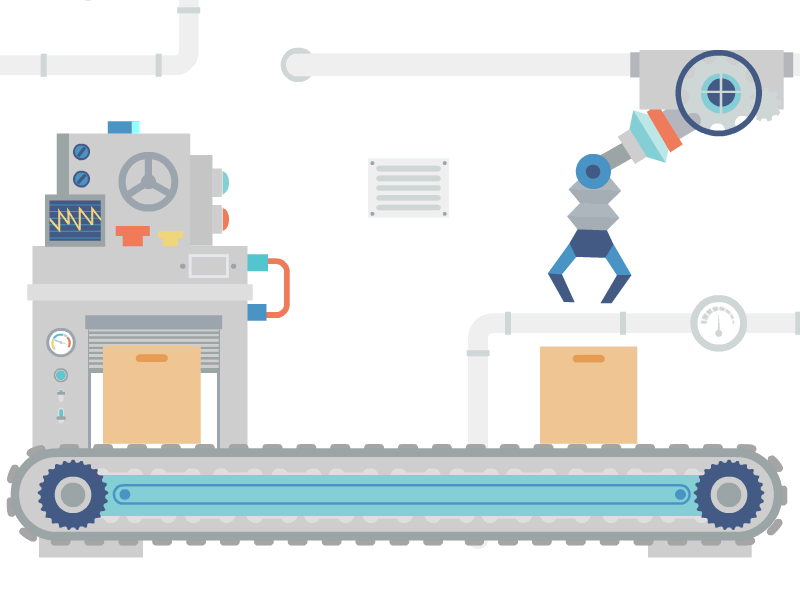

Main Page
Main Page  ICT
ICT  AP
AP Industriya

https://cdn.dribbble.com/userupload/20045899/file/original-f2999e4d8b9fe130724aaa02256b2408.gif
pagpoproseso ng mga hilaw na materyales at paggawa ng mga produkto na kinakailangan para sa pampublikong pamilihan.
Layunin ng Sektor ng Industriya: Maiproseso ang mga hilaw o sangkap na materyal upang makabuo ng mga produktong ginagamit ng tao.
Kilala ito bilang secondary sector.
Subsektor ng Industriya
Pagmimina (Mining)
- Pagkuha & proseso ng mga yamang mineral (metal, di-metal, o enerhiya) upang gawing tapos na produkto o kabahagi ng isang yaring kalakal.
- Mismong produkto ang nagbibigay ng kita para sa bansa.
click

Pagmamanupaktura (Manufacturing)
- Paggawa ng mga produkto sa pamamagitan ng manual labor o ng mga makina.
- Nagkakaroon ng pisikal o kemikal na transpormasyon ang mga materyal o bahagi nito sa pagbuo ng mga bagong produkto.
Konstruksyon (Construction)
- Kabilang dito ang mga gawaing tulad ng pagtatayo ng mga gusali, estruktura, at iba pang land improvements.
Utilities
- Binubuo ng mga kompanyang ang pangunahing layunin ay matugunan ang pangangailangan ng mga mamamayan tulad ng tubig, kuryente, & gas.
Kahalagahan ng Sektor ng Industriya sa Pambansang Kaunlaran
- Ito’y tumatanggap ng mga produkto mula sa sektor ng agrikultura & ng serbisyo sa sektor mula paglilingkod.
- Ang pag-unlad ng sektor ng industriya ay nangangahulugang pagkakaroon ng mas-maraming trabaho para sa mga tao.
- Ang mga produktong ineeksport ng sektor ng industriya ay nagpapasok ng dolyar sa bansa.
Ang Pagkakaugnay ng Sektor ng Agrikultura at Industriya tungo sa Pag-unlad ng Kabuhayan
- Nagmumula sa agrikultura ang mga hilaw na sangkap na ginagamit sa pagbuo ng mga produkto ng industriya.
- Ang mga ginagamit na traktora, sasakyang pangingisda, at iba pang produkto ay mula sa industriya na ginagamit ng mga magsasaka upang magkaroon ng mataas na produksyon na magbibigay ng malaking kita sa sektor ng agrikultura.
- Ang dami ng lakas-paggawa sa mga mamimili ay nagpapakita ng lubos na pagtutulungan sa mga sector ng industriya at agrikultura.s
- Ang agrikultura ang pinagmumulan ng pagkain ng mga industriya na siyang tumutugon sa mga pagkaing kinakailangan ng mga tao.
- Ang industriya ang nagbibigay ng malaking kontribusyon sa ekonomiya.
- Ang mga sangkap ay nagkakaroon ng transpormasyon dahil sa mga lakas–paggawa na gumagawa upang madagdagan ang halaga nito at lalo pang gumanda.
Mga Suliranin ng Sektor ng Industriya
- Pondo at Kompetisyon
- Paghina ng lokal na industriya
- Demand
Mga Patakarang Pang-ekonomiya:
- Filipino First Policy: Ipinatupad ni dating Pangulong Carlos P. Garcia; bigyan higit na malaking partisipasyon ang mga industriyang Pilipino sa pamamahagi ng pinagkukunang yaman.
- Oil Deregulation Law (RA 8479): Nagbukas ng lubos na kalayaan at kapangyarihan ang mga negosyante sapagkat ang pamahalaan ay hindi nakikialam sa pagtatakda ng presyo, pag-aangkat, at pagluluwas ng mga produktong petrolyo, at pagtatayo ng gasoline stations, depots, and refineries.
- Patakaran sa Microfinancing: Serbisyong pampinansyal kung saan pinauutang ng mga bangko ang mga interesadong magsasaka at maliliit na mangangalakal ng puhunan upang magsimula ng negosyo.
- Patakaran sa Online Business
- Online Shopping/Retailing
- Online Intermediary Service
- Online Advertisement/Classified Ads
- Online Auction
- Republic Act 1180 (Retail Nationalization Act of 1964) Binigyan ng 10 taong palugit ang mga dayuhang negosyante upang unti-unting itigil ang kanilang operasyon o ilipat ang pagmamay-ari ng kanilang mga retail business sa mga Pilipino.
- Republic Act 8762 (Retail Trade Liberalization Act of 2000) Pinawalang bisa ang RA 1180 at pinayagan ang mga dayuhan sa kalakalang pagtitingi.
- Build-Operate-Transfer (BOT) (R.A. 6957) Binibigyan ng karapatang bumuo ng mga pasilidad sa kanilang mga sariling pondo ang mga pribadong kompanya at palakarin ito sa humigit-kumulang na 25 taon bago ilipat ang pagmamay-ari sa pamahalaan.
- Asset Privatization Trust (APT) Itinatag upang mapangasiwaan ang pagbebenta ng mga korporasyong pagmamay-ari ng pamahalaan sa pribadong pagmamay-ari.
Industriyalisasyon
Ito ay kalagayan ng ekonomiya na nagpapakita ng kapasidad at kakayahan ng bansa na makalikha ng maraming produkto mula sa hilaw na materyal ng agrikultura na tutugunan sa pangangailangan ng lokal na pamilihan at pamilihan sa labas ng bansa.
Layunin
- Malinang at mapaunlad ang pinagkukunang yaman ng bansa (Likas na yaman, yamang tao, at yamang kapital)
- Magbigay pagkakataon na maitaas ang antas ng kabuhayan ng mga mamamayan.
- Makatulong sa pagpapaunlad ng ekonomiya.
Kahalagahan
- Daan para mapaunlad ang bansa
- Pagbabagong teknolohikal na sinasabayan ng mga pagbabagong pangkultura, panlipunan, at pansikolohikal.
- Mas magaan ang gawain ng mga manggagawa
Mga uri
- Cottage Industry
- Small and Medium Scale Industry
- Large Scale Industry
Epekto
- Mapataas ang produksyon ng sektor ng ekonomiya
- Hindi pagkakapantay ng kalagayang pang ekonomiko
- Polusyon
- Pagbaba ng pagkakaisa sa komunidad dahil sa kompetisyon
Mga Ahensya ng pamahalaan
- Department of Trade and Industry (DTI): Tuwirang tumitingin at nangangalaga sa larangan ng industriya at pangangalakal.
- Board of Investments (BOI): Tinutulungan ang mga nagsisimulang industriya at humihikayat sa mga dayuhang mamumuhunan na magnegosyo sa bansa.
- Philippine Economic Zone Authority (PEZA): Tumutulong sa mga namumuhunan na maghanap ng lugar upang pagtayuan ng negosyo.
- Securities and Exchange Commission (SEC): Nagtatala at nagrerehistro sa mga kompanya sa bansa.